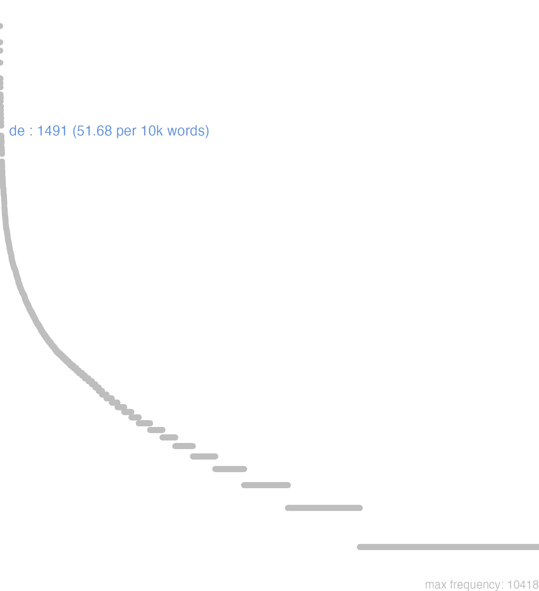

37 de
37.0.0.1 bases lexicais
id: http://lila-erc.eu/data/id/lemma/97932
classe: preposição
paradigma: indeclinável
outras grafias:
variantes do lema:
no data
dē
no data
37.0.0.2 dicionários tradicionais
dē
prep. e prevérbio
Obs.: 1 Como partícula autônoma aparece na locução: susque deque. de cima para baixo, como de baixo para cima, i.e., indiferentemente, mais ou menos. 2 Refoça certas partículas, advérbios e preposições, como: deinde, dehinc, desuper. 3 Como prevérbio aparece, principalmente, em compostos verbais e com as seguintes ideias principais: a movimento de cima para baixo: decìdo, dejicìo; b separação, afastamento: decédo, dedúco; e privação: demens, despéro; d acabamento: depúgno, defúngor; e intensidade: demíror.
prep. e prevérbio
Obs.: 1 Como partícula autônoma aparece na locução: susque deque. de cima para baixo, como de baixo para cima, i.e., indiferentemente, mais ou menos. 2 Refoça certas partículas, advérbios e preposições, como: deinde, dehinc, desuper. 3 Como prevérbio aparece, principalmente, em compostos verbais e com as seguintes ideias principais: a movimento de cima para baixo: decìdo, dejicìo; b separação, afastamento: decédo, dedúco; e privação: demens, despéro; d acabamento: depúgno, defúngor; e intensidade: demíror.
1 Indicando ponto de partida: De, a partir de Cíc. Sest. 129.
2 Indicando ponto de partida: De, saído de Cíc. Clu. 163.
3 Indicando ponto de partida: De, originário de Ov. Met. 9. 613.
4 Indicando ponto de partida: De ideia de afastamento, separação
5 Indicando ponto de partida: De movimento de cima para baixo, ideia acessoria Cíc. Fin. 1, 62.
6 Indicando ponto de partida: De, dentre ideia partitiva Cíc. Falc. 9.
7 Indicando ponto de partida: De, tirando de com ideia de extração Cíc. Verr. 4, 71;
8 Do sent. de «a partir de», passou-se ao de: Em seguida a, por Cíc. At. 7, 7, 3.
9 Do sent. de «a partir de», passou-se ao de: Logo depois de:
10 Sent. moral: Segundo, conforme a, de acordo com Cíc. Cael. 68.
11 Sent. moral: A respeito de, quanto a Cíc. Of. 1,47.
12 Sents. diversos: De, durante Ideia temporal Cés. B. Gal. 1, 12, 2.
13 Sents. diversos: De, por causa de ideia causal Cíc. Ac. 1, 1.
14 Sents. diversos: De, feito de, composto de Verg. G. 3, 13.
15 IV-Em locuções:
[EXEMPLOS]
4
com verbos como: detrahère de, tirar de; decedère de, afastar-se de; effugère de, escapar de; exíre de, sair de, etc. Cíc. Font. 17.
7
de publico Cíc. Verr. 105 «às expensas do Estado».
9
diem de die T. Lív. 5, 48, 7 «um dia depois do outro» de dia em dia.
15
de integro Cíc. Verr. 2, 139 «de novo»: de improviso Cíc. Amer. 151, «de improviso».
no data
De
prep. de ablat.
prep. de ablat.
1 Cic. de, da, das, do, dos, ácerca, conforme, depois.
De
Praepos.
Praepos.
1 ácerca, ou sobre
[EXEMPLOS]
X
de integro de novo
de nocte i, in nocte, vel per noctem: sic de die
non bonus est somnus de prandio i, post prandium
qua de re, qua de causa de compacto, de proposito, de cuidado id est, propter
no data
37.0.0.3 dados de corpus
![This chart plots collocate by scoreSUBST, for the headword de here are all the values plotted: collocate: res; scoreSUBST: 4. collocate: ego; scoreSUBST: 0. collocate: qui; scoreSUBST: 0. collocate: causa; scoreSUBST: 3. collocate: tu; scoreSUBST: 0. collocate: is; scoreSUBST: 0. collocate: meus; scoreSUBST: 0. collocate: quis; scoreSUBST: 0. collocate: multus; scoreSUBST: 0. collocate: Caesar; scoreSUBST: 0. collocate: amicitia; scoreSUBST: 2. collocate: pecunia; scoreSUBST: 2. collocate: lex; scoreSUBST: 2. collocate: pax; scoreSUBST: 2. collocate: manus; scoreSUBST: 2. collocate: bene; scoreSUBST: 0. collocate: tuus; scoreSUBST: 0. collocate: iste; scoreSUBST: 0. collocate: nos; scoreSUBST: 0. collocate: mors; scoreSUBST: 2. collocate: officium; scoreSUBST: 2. collocate: nunc; scoreSUBST: 0. collocate: iudicium; scoreSUBST: 2. collocate: uester; scoreSUBST: 0. collocate: senectus; scoreSUBST: 2. collocate: domus2; scoreSUBST: 2. collocate: nisi; scoreSUBST: 0. collocate: superus; scoreSUBST: 0. collocate: quintus; scoreSUBST: 2. collocate: loquor; scoreSUBST: 0. collocate: ambitus; scoreSUBST: 2. collocate: scriptum; scoreSUBST: 2. collocate: murus; scoreSUBST: 2. collocate: parthus; scoreSUBST: 0. collocate: Cyrus; scoreSUBST: 0. collocate: principatus; scoreSUBST: 2. collocate: tertius; scoreSUBST: 0. collocate: caelum2; scoreSUBST: 2. collocate: supplicatio; scoreSUBST: 2. collocate: summa; scoreSUBST: 2. collocate: pernicies; scoreSUBST: 2. collocate: nisi2; scoreSUBST: 0. collocate: Lucullus; scoreSUBST: 0. collocate: quaestio; scoreSUBST: 2. collocate: soror; scoreSUBST: 2. collocate: uenenum; scoreSUBST: 2. collocate: quartus; scoreSUBST: 0. collocate: coniuratio; scoreSUBST: 2. collocate: exeo; scoreSUBST: 0. collocate: queror; scoreSUBST: 0. collocate: reus; scoreSUBST: 2. collocate: lentulus; scoreSUBST: 0. collocate: seruus; scoreSUBST: 2](./Media/wordcloud__xx100-101xx__BY_collocate_scoreSUBST.webp)
![This chart plots collocate by scoreADJ, for the headword de here are all the values plotted: collocate: res; scoreADJ: 0. collocate: ego; scoreADJ: 0. collocate: qui; scoreADJ: 0. collocate: causa; scoreADJ: 0. collocate: tu; scoreADJ: 0. collocate: is; scoreADJ: 0. collocate: meus; scoreADJ: 0. collocate: quis; scoreADJ: 0. collocate: multus; scoreADJ: 0. collocate: Caesar; scoreADJ: 0. collocate: amicitia; scoreADJ: 0. collocate: pecunia; scoreADJ: 0. collocate: lex; scoreADJ: 0. collocate: pax; scoreADJ: 0. collocate: manus; scoreADJ: 0. collocate: bene; scoreADJ: 0. collocate: tuus; scoreADJ: 0. collocate: iste; scoreADJ: 0. collocate: nos; scoreADJ: 0. collocate: mors; scoreADJ: 0. collocate: officium; scoreADJ: 0. collocate: nunc; scoreADJ: 0. collocate: iudicium; scoreADJ: 0. collocate: uester; scoreADJ: 0. collocate: senectus; scoreADJ: 0. collocate: domus2; scoreADJ: 0. collocate: nisi; scoreADJ: 0. collocate: superus; scoreADJ: 0. collocate: quintus; scoreADJ: 0. collocate: loquor; scoreADJ: 0. collocate: ambitus; scoreADJ: 0. collocate: scriptum; scoreADJ: 0. collocate: murus; scoreADJ: 0. collocate: parthus; scoreADJ: 2. collocate: Cyrus; scoreADJ: 0. collocate: principatus; scoreADJ: 0. collocate: tertius; scoreADJ: 2. collocate: caelum2; scoreADJ: 0. collocate: supplicatio; scoreADJ: 0. collocate: summa; scoreADJ: 0. collocate: pernicies; scoreADJ: 0. collocate: nisi2; scoreADJ: 0. collocate: Lucullus; scoreADJ: 0. collocate: quaestio; scoreADJ: 0. collocate: soror; scoreADJ: 0. collocate: uenenum; scoreADJ: 0. collocate: quartus; scoreADJ: 2. collocate: coniuratio; scoreADJ: 0. collocate: exeo; scoreADJ: 0. collocate: queror; scoreADJ: 0. collocate: reus; scoreADJ: 0. collocate: lentulus; scoreADJ: 2. collocate: seruus; scoreADJ: 0](./Media/wordcloud__xx100-101xx__BY_collocate_scoreADJ.webp)
![This chart plots collocate by scoreVERBO, for the headword de here are all the values plotted: collocate: res; scoreVERBO: 0. collocate: ego; scoreVERBO: 0. collocate: qui; scoreVERBO: 0. collocate: causa; scoreVERBO: 0. collocate: tu; scoreVERBO: 0. collocate: is; scoreVERBO: 0. collocate: meus; scoreVERBO: 0. collocate: quis; scoreVERBO: 0. collocate: multus; scoreVERBO: 0. collocate: Caesar; scoreVERBO: 0. collocate: amicitia; scoreVERBO: 0. collocate: pecunia; scoreVERBO: 0. collocate: lex; scoreVERBO: 0. collocate: pax; scoreVERBO: 0. collocate: manus; scoreVERBO: 0. collocate: bene; scoreVERBO: 0. collocate: tuus; scoreVERBO: 0. collocate: iste; scoreVERBO: 0. collocate: nos; scoreVERBO: 0. collocate: mors; scoreVERBO: 0. collocate: officium; scoreVERBO: 0. collocate: nunc; scoreVERBO: 0. collocate: iudicium; scoreVERBO: 0. collocate: uester; scoreVERBO: 0. collocate: senectus; scoreVERBO: 0. collocate: domus2; scoreVERBO: 0. collocate: nisi; scoreVERBO: 0. collocate: superus; scoreVERBO: 0. collocate: quintus; scoreVERBO: 0. collocate: loquor; scoreVERBO: 2. collocate: ambitus; scoreVERBO: 0. collocate: scriptum; scoreVERBO: 0. collocate: murus; scoreVERBO: 0. collocate: parthus; scoreVERBO: 0. collocate: Cyrus; scoreVERBO: 0. collocate: principatus; scoreVERBO: 0. collocate: tertius; scoreVERBO: 0. collocate: caelum2; scoreVERBO: 0. collocate: supplicatio; scoreVERBO: 0. collocate: summa; scoreVERBO: 0. collocate: pernicies; scoreVERBO: 0. collocate: nisi2; scoreVERBO: 0. collocate: Lucullus; scoreVERBO: 0. collocate: quaestio; scoreVERBO: 0. collocate: soror; scoreVERBO: 0. collocate: uenenum; scoreVERBO: 0. collocate: quartus; scoreVERBO: 0. collocate: coniuratio; scoreVERBO: 0. collocate: exeo; scoreVERBO: 2. collocate: queror; scoreVERBO: 2. collocate: reus; scoreVERBO: 0. collocate: lentulus; scoreVERBO: 0. collocate: seruus; scoreVERBO: 0](./Media/wordcloud__xx100-101xx__BY_collocate_scoreVERBO.webp)
![This chart plots collocate by scoreADV, for the headword de here are all the values plotted: collocate: res; scoreADV: 0. collocate: ego; scoreADV: 0. collocate: qui; scoreADV: 0. collocate: causa; scoreADV: 0. collocate: tu; scoreADV: 0. collocate: is; scoreADV: 0. collocate: meus; scoreADV: 0. collocate: quis; scoreADV: 0. collocate: multus; scoreADV: 0. collocate: Caesar; scoreADV: 0. collocate: amicitia; scoreADV: 0. collocate: pecunia; scoreADV: 0. collocate: lex; scoreADV: 0. collocate: pax; scoreADV: 0. collocate: manus; scoreADV: 0. collocate: bene; scoreADV: 2. collocate: tuus; scoreADV: 0. collocate: iste; scoreADV: 0. collocate: nos; scoreADV: 0. collocate: mors; scoreADV: 0. collocate: officium; scoreADV: 0. collocate: nunc; scoreADV: 2. collocate: iudicium; scoreADV: 0. collocate: uester; scoreADV: 0. collocate: senectus; scoreADV: 0. collocate: domus2; scoreADV: 0. collocate: nisi; scoreADV: 0. collocate: superus; scoreADV: 0. collocate: quintus; scoreADV: 0. collocate: loquor; scoreADV: 0. collocate: ambitus; scoreADV: 0. collocate: scriptum; scoreADV: 0. collocate: murus; scoreADV: 0. collocate: parthus; scoreADV: 0. collocate: Cyrus; scoreADV: 0. collocate: principatus; scoreADV: 0. collocate: tertius; scoreADV: 0. collocate: caelum2; scoreADV: 0. collocate: supplicatio; scoreADV: 0. collocate: summa; scoreADV: 0. collocate: pernicies; scoreADV: 0. collocate: nisi2; scoreADV: 2. collocate: Lucullus; scoreADV: 0. collocate: quaestio; scoreADV: 0. collocate: soror; scoreADV: 0. collocate: uenenum; scoreADV: 0. collocate: quartus; scoreADV: 0. collocate: coniuratio; scoreADV: 0. collocate: exeo; scoreADV: 0. collocate: queror; scoreADV: 0. collocate: reus; scoreADV: 0. collocate: lentulus; scoreADV: 0. collocate: seruus; scoreADV: 0](./Media/wordcloud__xx100-101xx__BY_collocate_scoreADV.webp)
![This chart plots collocate by scoreFUNC, for the headword de here are all the values plotted: collocate: res; scoreFUNC: 0. collocate: ego; scoreFUNC: 0. collocate: qui; scoreFUNC: 0. collocate: causa; scoreFUNC: 0. collocate: tu; scoreFUNC: 0. collocate: is; scoreFUNC: 0. collocate: meus; scoreFUNC: 0. collocate: quis; scoreFUNC: 0. collocate: multus; scoreFUNC: 0. collocate: Caesar; scoreFUNC: 0. collocate: amicitia; scoreFUNC: 0. collocate: pecunia; scoreFUNC: 0. collocate: lex; scoreFUNC: 0. collocate: pax; scoreFUNC: 0. collocate: manus; scoreFUNC: 0. collocate: bene; scoreFUNC: 0. collocate: tuus; scoreFUNC: 0. collocate: iste; scoreFUNC: 0. collocate: nos; scoreFUNC: 0. collocate: mors; scoreFUNC: 0. collocate: officium; scoreFUNC: 0. collocate: nunc; scoreFUNC: 0. collocate: iudicium; scoreFUNC: 0. collocate: uester; scoreFUNC: 0. collocate: senectus; scoreFUNC: 0. collocate: domus2; scoreFUNC: 0. collocate: nisi; scoreFUNC: 20. collocate: superus; scoreFUNC: 0. collocate: quintus; scoreFUNC: 0. collocate: loquor; scoreFUNC: 0. collocate: ambitus; scoreFUNC: 0. collocate: scriptum; scoreFUNC: 0. collocate: murus; scoreFUNC: 0. collocate: parthus; scoreFUNC: 0. collocate: Cyrus; scoreFUNC: 0. collocate: principatus; scoreFUNC: 0. collocate: tertius; scoreFUNC: 0. collocate: caelum2; scoreFUNC: 0. collocate: supplicatio; scoreFUNC: 0. collocate: summa; scoreFUNC: 0. collocate: pernicies; scoreFUNC: 0. collocate: nisi2; scoreFUNC: 0. collocate: Lucullus; scoreFUNC: 0. collocate: quaestio; scoreFUNC: 0. collocate: soror; scoreFUNC: 0. collocate: uenenum; scoreFUNC: 0. collocate: quartus; scoreFUNC: 0. collocate: coniuratio; scoreFUNC: 0. collocate: exeo; scoreFUNC: 0. collocate: queror; scoreFUNC: 0. collocate: reus; scoreFUNC: 0. collocate: lentulus; scoreFUNC: 0. collocate: seruus; scoreFUNC: 0](./Media/wordcloud__xx100-101xx__BY_collocate_scoreFUNC.webp)
![This charts plots the frequency of lemma by author_Frequencies. The Hieronymus subcorpus registers the highest normalized frequency, with the value of 71.89 and an absolute frequency of 32. The Cicero subcorpus follows, with a normalized frequency of 71.08 and an absolute frequency of 1141. the subcorpus with the least normalized frequency is Vergilius with the normalized value of 7.72 and an absolute freqeuncy of 4. here are all the values: subcorpus: Caesar ; normalized frequency: 109 ; absolute frequency: 41.1662512274341. subcorpus: Cicero ; normalized frequency: 1141 ; absolute frequency: 71.0797139368568. subcorpus: Horatius ; normalized frequency: 12 ; absolute frequency: 10.6562472249356. subcorpus: Ovidius ; normalized frequency: 16 ; absolute frequency: 27.4536719286205. subcorpus: Phaedrus ; normalized frequency: 8 ; absolute frequency: 12.1451343555488. subcorpus: Sallustius ; normalized frequency: 58 ; absolute frequency: 53.798348947222. subcorpus: Seneca ; normalized frequency: 104 ; absolute frequency: 19.4098654373752. subcorpus: Suetonius ; normalized frequency: 1 ; absolute frequency: 11.0253583241455. subcorpus: Tacitus ; normalized frequency: 6 ; absolute frequency: 20.5973223480947. subcorpus: Vergilius ; normalized frequency: 4 ; absolute frequency: 7.72200772200772. subcorpus: Hieronymus ; normalized frequency: 32 ; absolute frequency: 71.8939564142889](./Media/barchart__xx100-101xx__lemma_BY_author_Frequencies.webp)
![This charts plots the frequency of lemma by genre_Frequencies. The Prosa.epistolográfica subcorpus registers the highest normalized frequency, with the value of 102.02 and an absolute frequency of 385. The Poesia.épica subcorpus follows, with a normalized frequency of 7.72 and an absolute frequency of 4. the subcorpus with the least normalized frequency is Poesia.trágica with the normalized value of 2.61 and an absolute freqeuncy of 3. here are all the values: subcorpus: Prosa.histórica ; normalized frequency: 174 ; absolute frequency: 42.3574088950559. subcorpus: Prosa.filosófica ; normalized frequency: 210 ; absolute frequency: 34.5958056704173. subcorpus: Prosa.oratória ; normalized frequency: 647 ; absolute frequency: 62.1201501637015. subcorpus: Prosa.epistolográfica ; normalized frequency: 385 ; absolute frequency: 102.016481623784. subcorpus: Poesia.lírica ; normalized frequency: 15 ; absolute frequency: 12.6188272903172. subcorpus: Poesia.didática ; normalized frequency: 21 ; absolute frequency: 17.8132157095598. subcorpus: Poesia.trágica ; normalized frequency: 3 ; absolute frequency: 2.60597637248089. subcorpus: Poesia.épica ; normalized frequency: 4 ; absolute frequency: 7.72200772200772. subcorpus: Prosa.ficcional ; normalized frequency: 32 ; absolute frequency: 71.8939564142889](./Media/barchart__xx100-101xx__lemma_BY_genre_Frequencies.webp)
![This charts plots the frequency of lemma by period_Frequencies. The IV.d.C. subcorpus registers the highest normalized frequency, with the value of 71.89 and an absolute frequency of 32. The I.a.C. subcorpus follows, with a normalized frequency of 61.76 and an absolute frequency of 1327. the subcorpus with the least normalized frequency is II.d.C. with the normalized value of 18.32 and an absolute freqeuncy of 7. here are all the values: subcorpus: I.a.C. ; normalized frequency: 1327 ; absolute frequency: 61.7640214102862. subcorpus: I.d.C. ; normalized frequency: 125 ; absolute frequency: 19.1219213706593. subcorpus: II.d.C. ; normalized frequency: 7 ; absolute frequency: 18.3246073298429. subcorpus: IV.d.C. ; normalized frequency: 32 ; absolute frequency: 71.8939564142889](./Media/barchart__xx100-101xx__lemma_BY_period_Frequencies.webp)
tertia de Othone
Cic.Att.2.1.3
o terceiro, sobre Otão. [JDD]
quid de bonis
Cic.Att.3.15.6
E a respeito dos meus bens? [JDD]
nihil de ueneno
Cic.Deiot.18
Nada a respeito do veneno. [JDD]
nunc cognosce de Bruto
Cic.Att.5.21.10
agora inteira-te dos acerca de Bruto. [JDD]
de Parthis erat silentium
Cic.Att.5.11.4
Com relação ao partos, há um silêncio. [JDD]
de superiore coniuratione satis dictum
Sal.Cat.19.6
Sobre a primeira conjuração é suficiente o que foi dito. [JDD]
mea mandata de domo curabis
Cic.Att.4.7.3
Cuidarás dos meus encargos em relação à casa. [JDD]
obmutesce et exi de homine
Vulg.Marc.1.25
Cala-te e sai desse homem. [JDD]
exiit daemonium de filia tua
Vulg.Marc.7.29
o demônio saiu de tua filha. [JDD]
et vox facta est de caelis
Vulg.Marc.1.11
E aconteceu uma voz vinda dos ceus. [JDD]
Omnis de officio duplex est quaestio
Cic.Off.1.7
Toda questão sobre o dever é dupla. [JDD]
cui tamen Quintus de mensa misit
Cic.Att.5.1.4
a quem Quinto mandou algo da mesa. [JDD]
de muro quid opus sit videbis
Cic.Att.2.7.5
Quanto ao muro, verás o que é necessário. [JDD]
an de sororis filio diligentius respondendum est
Cic.Rab.Perd.8
Ou, por acaso, é preciso responder com mais empenho acerca do filho de sua irmã? [JDD]
de Lentulo scilicet sic fero ut debeo
Cic.Att.4.6.1
Quanto a Lêtulo, indubitavelmente sofro como devo. [JDD]
de supplicatione credo M. Lepidi clarissimi uiri
Cic.Phil.3.23.10
Ao da ação de graças, eu creio, em honra de Marco Lépido, ilustríssimo varão. [JDD, de outra edição]
noli inquam de uno pede sororis queri
Cic.Att.2.1.5
“Não te queixes desse único pé de tua irmã”, digo eu. [JDD]
exultat et mihi facit controuersiam de senectute
Sen.Ep.26.2
Está exultante e propõe discussão sobre a velhice. [JDD]
de re publica breviter ad te scribam
Cic.Att.2.20.3
Sobre a república, te escreverei em breve. [JDD]
extorta est ei confitenti sica de manibus
Cic.Mil.18
Um punhal foi arrancado das mãos dele, que confessou. [JDD]
praeterea de muro statue quid faciendum sit
Cic.Att.2.6.2
Além disso, decide o que deve ser feito com relação ao muro. [JDD]
de Ἀμαλθείᾳ quod me admones non neglegemus
Cic.Att.2.7.5
O que me aconselhas a respeito de Amalteia não vou negligenciar. [JDD, de outra edição]
sed de re publica non libet plura scribere
Cic.Att.2.18.3
Mas não tenho mais vontade de escrever sobre a república. [JDD]
sed de hoc alias nunc redeo ad augurem
Cic.Amici.1
Mas sobre ele, em outra ocasião; agora volto ao áugure. [JDD]
occulta enim fuit eorum uoluntas iudiciumque de Antonio
Cic.Phil.7.21.9
Pois a disposição e julgamento desses acerca de Antônio ficaram velados. [JDD]
de iis qui nunc petunt Caesar certus putatur
Cic.Att.1.1.2
Dos que se candidatam agora (para este ano), César (Lúcio Júlio César) é considerado como certo. [JDD, de outra edição]
vix tandem tibi de mea voluntate concessum est
Cic.Att.4.2.4
A custo, contudo, lhe foi concedido graças a minha vontade. [JDD, de outra edição]
condemnare Diodorum non audet absentem de reis eximit
Cic.Ver.2.4.41.13
Não ousa condenar Diodoro, estando este ausente; livra-o dos réus. [JDD]
de tuo autem negotio saepe ad me scribis
Cic.Att.1.19.9
Me escreves com frequência sobre o teu assunto. [JDD]
quibus absolutis scribis illi placuisse agi de nobis
Cic.Att.3.14.1
e me escreves que, concluídas estas, agradou a ele tratar de nós. [JDD]
de domo et Curionis oratione ut scribis ita est
Cic.Att.3.20.2
A respeito da casa e do discurso de Curião, é tal como escreves. [JDD]
multos enim eius praeclaros de re publica sermones accipiam
Cic.Att.5.6.1
pois ouvirei muitas falas brilhantes dele sobre a república. [JDD]
num igitur ulla quaestio de Africani morte lata est
Cic.Mil.16
Por ventura algum inquérito sobre a morte do Africano foi então proposto? [JDD]
de re publica nisi per concilium loqui non conceditur
Caes.Gal.6.20.3
Sobre a república, a não ser através de uma assembléia, não é concedido falar. [JDD]
valde eius sermo de Publio cum tuis litteris congruebat
Cic.Att.2.8.1
A conversa dele a respeito de Públio está perfeitamente de acordo com tuas cartas. [JDD]
Caesar his de causis quas commemoraui Rhenum transire decreuerat
Caes.Gal.4.17.1
César, por esses motivos que lembrei, tinha decretado atravessar o Reno. [JDD]
post illas datas litteras secuta est summa contentio de domo
Cic.Att.4.2.2
Depois de dada aquela carta seguiu-se uma enorme discussão sobre a minha casa. [JDD]
sed urbana plebes ea uero praeceps erat de multis causis
Sal.Cat.37.4
Mas a plebe urbana, essa, na verdade, por muitos motivos, estava inclinada para o precipício. [JDD]
omnia perspicere poteris de Caesare de Pompeio de ipsis iudiciis
Cic.Att.5.12.2
poderás examinar bem tudo, sobre César, sobre Pompeu, sobre os próprios julgamentos. [JDD]
quam multis istum putatis hominibus honestis de digitis anulos abstulisse
Cic.Ver.2.4.57.11
De quantos homens honrados julgais que esse sujeito tirou dos dedos os anéis? [JDD]
secutus est tum annus causam de pecuniis repetundis Catilina dixit
Cic.Cael.10
Passou-se então um ano, Catilina apresentou sua defesa a respeito da corrupção. [JDD]
quoniam de genere belli dixi nunc de magnitudine pauca dicam
Cic.Man.20
Visto que disse sobre o gênero dessa guerra, agora vou dizer umas poucas palavras sobre sua magnitude. [JDD]
facto senatus consulto de ambitu de iudiciis nulla lex perlata
Cic.Att.1.18.3
Promulgado um decreto do senado sobre o suborno, outro sobre os juízes, nenhuma lei os sancionou. [JDD]
nimium multa de re minime dubia loquor hoc tamen dico
Cic.Cael.15
Falo demasiadamente muitas coisas sobre um assunto nem um pouco duvidoso; contudo, isto eu digo. [JDD]
non committam posthac ut me accusare de epistularum neglegentia possis
Cic.Att.1.6.1
Não vou admitir de agora em diante que possas me acusar de negligência nas cartas. [JDD]
dicebat autem quoniam quae de homine exeunt illa communicant hominem
Vulg.Marc.7.20
Dizia, por outro lado, que aquelas coisas que saem do homem contaminam o homem. [JDD]
de meis scriptis misi ad te Graece perfectum consulatum meum
Cic.Att.1.20.6
Dos meus escritos, te mandei já terminado o meu consulado em grego. [JDD]
sed postea tamen ille non destitit de nobis asperrime loqui
Cic.Att.2.22.2
Mas, após isso, ele, contudo, não parou de falar de nós de um modo extremamente grosseiro. [JDD]
iam enim ipsius Catonis sermo explicabit nostram omnem de senectute sententiam
Cic.Sen.3
Pois a fala do próprio Catão já vai desenvolver toda a nossa opinião sobre a velhice. [JDD]
eodem die legati ab hostibus missi ad Caesarem de pace uenerunt
Caes.Gal.4.36.1
No mesmo dia legados enviados pelos inimigos vieram a César acerca da paz. [JDD]
37.0.0.4 Diagrama de Zipf
